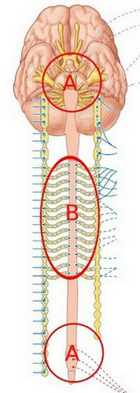
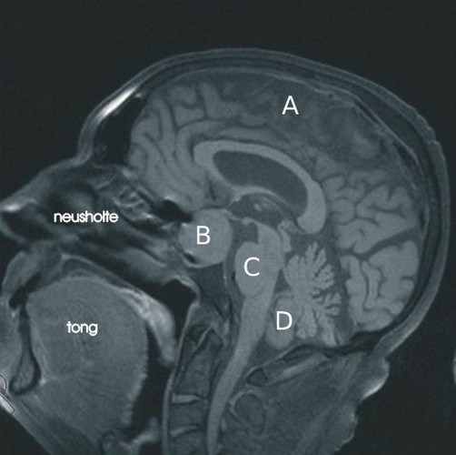

Vraag 1
Een man van 21 jaar loopt in de Kalverstraat. Hij staat bij een etalage te kijken op het moment dat hij plotseling flauwvalt. Omstanders zien dat hij zijn urine laat lopen. Nadien blijkt hij op zijn tong gebeten te hebben. Hij heeft ook een hoofdwond van 5 cm. Hij heeft hoofdpijn en is misselijk.
Welke twee gegevens pleiten meer voor epilepsie dan voor een vasovagale collaps als oorzaak van de wegraking?
Meerdere antwoorden mogelijk.
Vraag 2
Een man van 50 jaar begint aan een tenniswedstrijd. Voordat hij de eerste bal slaat valt hij plots flauw. Hij schokt met armen en benen en bijt op zijn tong. Na 5 minuten komt hij langzaam weer bij. Hij is nog lange tijd suf hierna. Hij heeft een blanco voorgeschiedenis.
Welk aanvullend onderzoek is nu het meest aangewezen om de oorzaak te achterhalen?
Vraag 3
Kies de juiste alternatieven.
Fosforylatie van eiwitten door leidt vaak tot van enzymen.
Vraag 4
Welk van de onderstaande beweringen over het cholera toxine is juist?
Vraag 5
Wat is een belangrijke functie van de kinase Tor?
Vraag 6
Kies de juiste alternatieven.
Calcitonine wordt geproduceerd in de door .
Vraag 7
Kies de juiste alternatieven.
Een tekort aan jodium in de voeding leidt tot een door een productie van TSH, door cellen in de .
Vraag 8
Waar in onderstaande afbeelding treden de zenuwvezels van het sympathische zenuwstelsel uit?

Vraag 9
Welke van de onderstaande beweringen is juist?
Vraag 10
Welke van de structuren in onderstaande afbeelding is afwijkend?

Vraag 11
De pancreas wordt gevasculariseerd door aftakkingen van twee arteriën.
Aftakkingen uit welke twee arteriën zijn dit? Dat zijn aftakkingen uit de:
Meerdere antwoorden mogelijk.
Vraag 12
Schade aan de n. laryngeus beiderzijds tijdens een operatieve ingreep aan de schildklier kan leiden tot specifieke klachten.
Welk symptoom is juist?
Vraag 13
‘Hardop denken’ wordt in Recepten voor een goed gesprek (2014) besproken als een gespreksvaardigheid waarmee de:
Vraag 14
Patiënt Jannie Zwaan is op consult bij haar huisarts vanwege aanhoudende hoestklachten. Tijdens dit consult zegt haar huisarts: ‘Ik merk dat u heel erg veel te vertellen heeft over het wel-en-wee van uw kleinzoon, maar we zitten vandaag hier voor u. Ik zou het vandaag dus graag over uw klachten willen hebben, vindt u dat goed?’
Welke gesprekstechniek past de arts hier toe?
Vraag 15
De huisarts van mevrouw C (26 jaar oud) stelt bij haar de diagnose depressie. Hij wil haar behandelen met het anti-depressivum amitryptiline. Van amitryptiline is bekend dat het een groot eerste-passage (=first-pass) effect heeft.
Wat is hiervan het gevolg voor de farmacokinetische eigenschappen van amitryptiline bij orale toediening?
Vraag 16
Kies de juiste alternatieven.
De heer G (62 jaar) gebruikt al langere tijd lovastatine (substraat voor CYP3A4). De huisarts overweegt de calciumkanaalblokker diltiazem toe te voegen, een remmer van CYP3A4. Wat zullen de verwachte gevolgen zijn? — De biotransformatie van lovastatine neemt af. Er is sprake van van de kans op lovastatine bijwerkingen.
Vraag 17
STELLING: Een volle receptor agonist onderscheidt zich van een partiele receptor agonist door een hogere effectiviteit (=efficacy). Deze stelling is:
Vraag 18
Antropine is een selectieve muscarine receptor antagonist. STELLING: Het farmacologisch aangrijpingspunt van atropine behoort tot de categorie van niet-membraan gebonden eiwitten. Deze stelling is:
Vraag 19
Geneesmiddelen worden vaak langdurig gebruikt. Wat is het effect van het langdurig gebruik van een receptor agonist op de farmacologische karakteristieken van de agonist-receptor interactie?
Vraag 20
In een experiment met gekweekte gladde spiercellen uit de long wordt onderzocht of een groep van farmaca de aanmaak van de second messenger cyclisch AMP (cAMP) stimuleert via activatie van de beta-2 adrenoreceptor. Het is bekend dat alle te onderzoeken stoffen met hoge affiniteit en zeer selectief binden aan de beta-2 adrenoreceptor en dat deze receptor in hoge mate tot expressie komt op de gekweekte spiercellen. Zoals verwacht neemt de hoeveelheid cAMP in de spiercellen concentratie-afhankelijk toe in aanwezigheid van adrenaline. Echter, wanneer hetzelfde experiment wordt herhaald in aanwezigheid van farmacon A dan blijkt de concentratie-effect curve van adrenaline parallel naar rechts te verschuiven.
Welke conclusie is juist op basis van de beschrijving van dit experiment?
Vraag 21
Fosfodiesterases worden geremd door farmaca zoals theofylline en caffeine.
Wat is het onmiddelijke gevolg van deze remming?
Vraag 22
Kies de juiste alternatieven.
Acetylcholinesterase speelt een hoofdrol in de van acetylcholine, in het deel van het sympathisch zenuwstelsel.
Vraag 23
Kies de juiste alternatieven.
Atracurium behoort tot de groep van niet-depolariserende neuromusculaire blokkers. Op basis van dit gegeven komt u tot de conclusie dat atracurium is van .
Vraag 24
Kies de juiste alternatieven.
Tumoren van het bijniermerg produceren vaak grote hoeveelheden noradrenaline en adrenaline die aan de bloedcirculatie worden afgegeven. Om de effecten van deze overproductie tegen te gaan kan een farmacon worden toegediend dat de aanmaak sterk vermindert door het blokkeren van de snelheids-bepalende stap in hun synthese-route. Op basis hiervan concludeert u dat het farmacon de activiteit van remt, waardoor de directe omzetting van wordt voorkomen.
Vraag 25
Welk van de volgende organen wordt uitsluitend sympatisch geïnnerveerd:
Vraag 26
Verhoging van de hartfrequentie vindt plaats als direct gevolg van stimulatie van het volgende receptortype:
Vraag 27
De motiliteit van het maag-darm kanaal vermindert als direct gevolg van stimulatie van het volgende receptor type (drie juiste antwoorden):
Meerdere antwoorden mogelijk.
Vraag 28
Sympatische zenuwuiteinden scheiden bij activatie catecholamines uit.
Hoe wordt het grootste deel van de activiteit van deze catecholamines beëindigd? Doordat catecholamines worden:
Vraag 29
Neuropeptide Y is een co-transmitter in preganglionaire sympathische zenuwvezels. Deze stelling is:
Vraag 30
In het hart vindt presynaptische inhibitie van het parasympatisch zenuwstelsel plaats door noradrenaline. Deze stelling is:
Vraag 31
Bij anorexia en diabetes mellitus type I lijkt de glucose huishouding in biochemisch opzicht sterk op elkaar.
Wat is echter het grote verschil tussen deze twee ziektes?
Vraag 32
Kort vasten (minder dan 2 dagen) leidt tot eiwitafbraak in spieren en vetafbraak in vetcellen. Beide processen worden gestuurd door een toename in glucagon niveaus.
Waarom is het nuttig dat beide processen gelijktijdig plaatsvinden?
Vraag 33
Welke van de onderstaande stellingen met betrekking tot septische shock is/zijn juist/onjuist?
1. Het merendeel van de septische shock in patiënten wordt veroorzaakt door gram-positieve bacteriën
2. De hemodynamische effecten zoals bij septische shock treden op na intraveneuze toediening van LPS (lipopolysaccharide)
1. Het merendeel van de septische shock in patiënten wordt veroorzaakt door gram-positieve bacteriën
2. De hemodynamische effecten zoals bij septische shock treden op na intraveneuze toediening van LPS (lipopolysaccharide)
Vraag 34
Een belangrijk kenmerk van septische shock is dat:
Vraag 35
De axonen vanuit de baroreceptoren in de sinus caroticus en de aorta boog gaan RESPECTIEVELIJK via:
Vraag 36
Welke schildklier antistoffen worden beschouwd als ondersteunend voor de diagnose Graves hyperthyroïdie:
Vraag 37
Stimulatie van adrenerge receptoren in gladde spiercellen leidt tot:
Vraag 38
Waardoor wordt diabetes mellitus type 2 gekenmerkt?
Vraag 39
Insuline uit de alvleesklier zorgt voor:
Vraag 40
Wat is de eerste keus behandeling bij een groeihormoonproducerend macroadenoom van de hypofyse dat blijkens MRI onderzoek druk uitoefent op het chiasma opticum?
Vraag 41
Diabetes medicatie kan als bijwerking een gewichtstoename hebben. Dit is voor patiënten een vervelende bijwerking, gezien zij vaak al te zwaar zijn.
Bij gebruik van welk geneesmiddel is gewichtstoename het minst waarschijnlijk?
Vraag 42
Bloedonderzoek bij een patiënt laat verhoogde plasma spiegels zien van zowel TSH als T3 en T4.
Wat kan hier de oorzaak van zijn?
Vraag 43
Geef aan wat een voorbeeld is van een activiteit van het “efferent pathway” als onderdeel van het homeostatisch controlesysteem tijdens hypothermie.
Vraag 44
Wim Hof, alias de ijsman, kan extreem koude temperaturen met gemak doorstaan.
Hoe noem je het proces waardoor zijn temperatuurregulatiesysteem beter is gaan functioneren?
Vraag 45
In welke nucleus bevindt zich de ‘pacemaker’ die biologische ritmes bepaald? In de nucleus ...
Vraag 46
In de hypofyse achterkwab:
Vraag 47
Hoe worden peptide hormonen geproduceerd?
Vraag 48
De huisarts ziet een patiënt die allerlei symptomen presenteert, zoals tachycardie, verhoogd vetzuurniveau en angst, die overeenkomen met een verhoogd adrenalineniveau. Echter, het circulerende adrenalineniveau valt binnen de normaal te verwachten waarden.
Wat is de meest voor de hand liggende oorzaak van de symptomen? De patiënt:
Vraag 49
Als er in het lichaam een antilichaam gemaakt wordt gericht tegen een peptide, dan kan dit peptide zijn functie niet meer goed uitoefenen.
Stel dat er in een patiënt antilichamen gevonden worden tegen somatostatine, wat gebeurt er dan met de afgifte van welk hormoon uit de hypofyse voorkwab?
Vraag 50
Bij het klinisch beeld van een feochromocytoom vindt over productie van catecholamines plaats in welk deel van de bijnier?
Vraag 51
Welke afwijking toont de bijnier in geval van het paraneoplastische Cushing syndroom?
Vraag 52
Diabetische microangiopathie leidt tot ernstige functionele schade in een aantal weefsels.
Welk weefsel wordt aldus relatief vaak beschadigd bij diabetespatiënten?
Vraag 53
Welke organen of orgaansystemen zijn vaak aangetast door diabetische microangiopathie?
Vraag 54
Bij een patiënt heeft u de diagnose osteoporose gesteld. U wilt hem hiervoor gaan behandelen met bisfosfonaten.
Tijdens het consult geeft u de volgende uitleg: